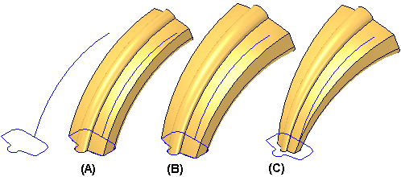
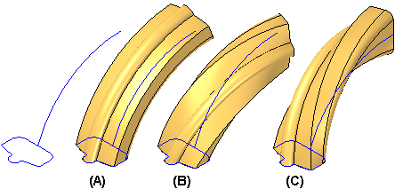
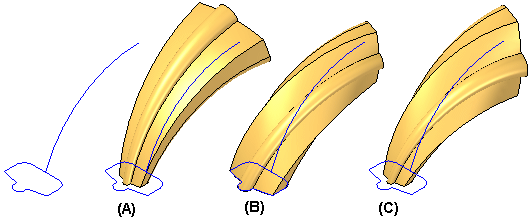
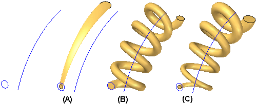

Using the Sweep Options dialog box
For new swept features constructed in version 18 or later, you can use the Sweep Options dialog box to set options that give you additional control over the shape of the feature. You can use the dialog box to set options that control section alignment with respect to the path curve, face merging, and face continuity.
For swept features that are constructed with only one path curve and one cross section, there are also options available which allow you to define scale and twist properties for the swept feature.
-
Section Alignment
The Section Alignment options allow you to control how the faces defined by cross section curves are oriented with respect to the path curves. Depending on the input curves, some options may provide better results. If one option does not give you the result you want, experiment with the other options.
For example, using the same input sketches, different results are achieved by changing the Section Alignment option from Normal (A) to Parallel (B). In this example, the bottom path curve P1 was selected first. Notice that the feature deviates from the path curve when using the Normal option with this set of sketches, but does not deviate from the path curve when using the Parallel option.

-
Face Merging
The face merging options allow you to specify whether or not faces on the feature are merged. Specifies the face merging option you want. You can specify that faces are not merged (A), fully merged (B), or merged only along the path (C). This can be seen more easily if Part Painter is used to change the surface color.

If you change the face merging options on a swept feature after downstream features that depend on the original faces are constructed, the downstream features may not recompute properly.
-
Face Continuity
The face continuity options allow you to specify the degree of continuity between adjacent segments within a swept feature.
-
Scale
The scale options allow you to specify that the cross section of the swept feature is scaled as proceeds along the path curve. Values greater than 1 increase the size of the feature, and values less than 1 decrease the size of the feature.
The examples below illustrate (A): no scale, (B): start scale of 1 and an end scale of 1.5, (C): start scale of 0.5 and an end scale of 1.5.

-
Twist
The twist options allow you to specify that the cross section of the swept feature is twisted as proceeds along the path curve. You can specify twist based on the number of turns over the length of the feature, number of turns per unit of length, or by start angle and end angle. You can also specify whether the twist is applied in a clockwise or counter-clockwise fashion by enter positive or negative values
The examples below illustrate (A): no twist, (B): 0.25 turns over the length of the feature (clockwise), (C): –0.25 turns (counter-clockwise).

-
Combining Scale and Twist
In many cases, you can also combine sweep options to achieve different results. For example, you can combine the scale and twist options. The examples below illustrate the different results possible for (A): scale, (B): twist, (C): scale and twist.


How do I
Construct a swept protrusion or cutoutLearn more
Constructing swept synchronous featuresComparing swept, lofted, and BlueSurf features
Cross sections
Defining a locking axis
Path Curves
Using Sketches
Look up more details
Swept Protrusion commandSwept Protrusion command bar
Sweep Options dialog box
Tips for path and cross section creation